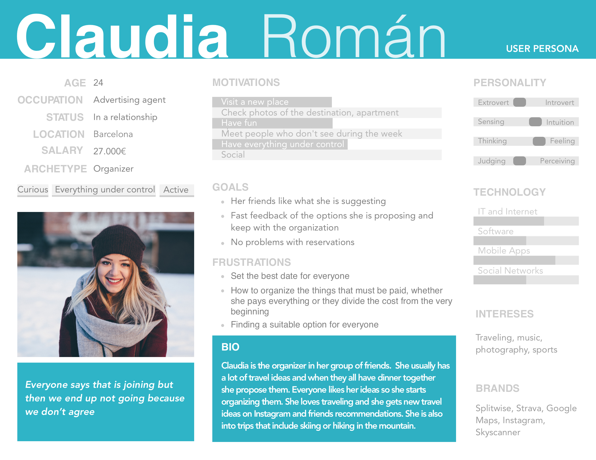
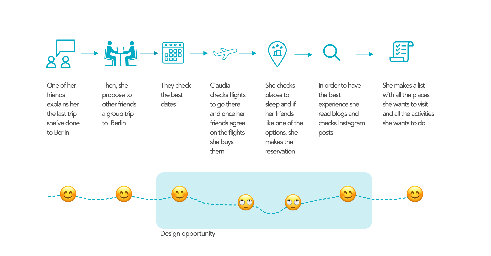
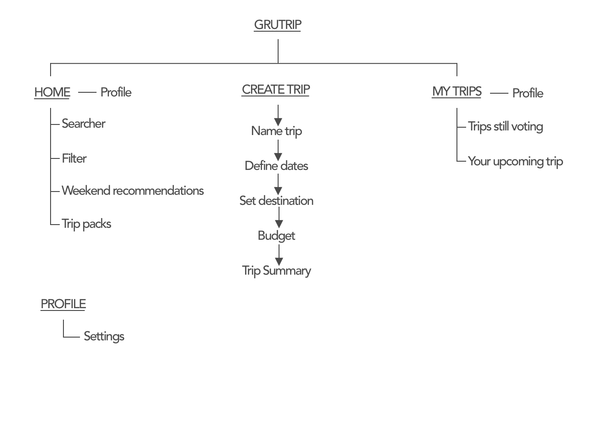
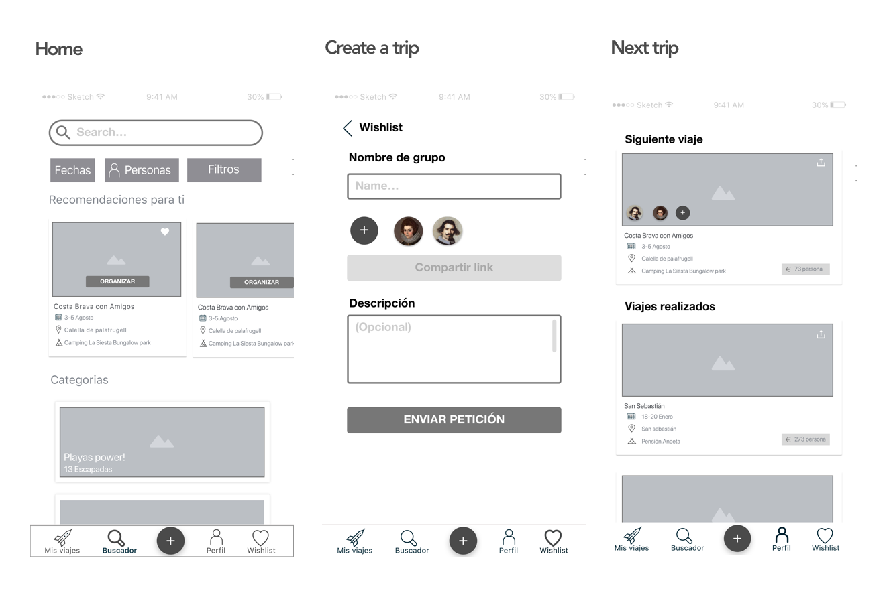
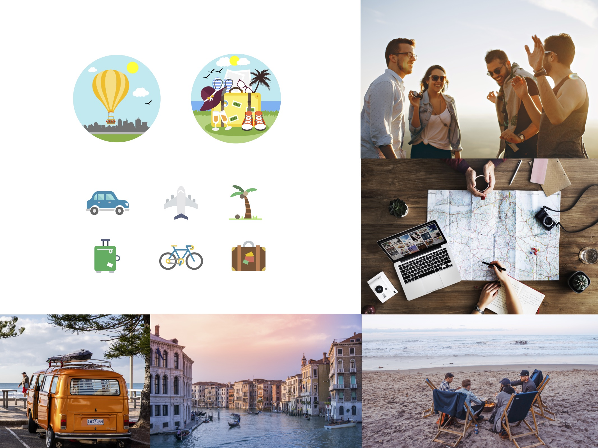
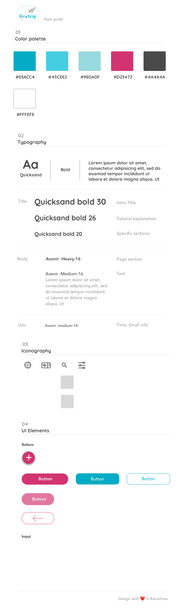

Context
People tend to organize weekend trips every month or every 60 days and the main reason they organize them is to spend time with the people they love, rest and disconnect from the daily routine.
However, not all the group trips that are planned are traveled. This happens because is quite hard to agree with everybody in the destination, dates, budget, what to see, transport in the destination...
User persona
In every group, there is always who lead the organization and others are following their advice. However, in order to create the best trip, the organizers need fast feedback about what the are proposing.
Based on the research I created Claudia Román, an invented persona who gather the attributes that a group trip organizer has.
Designing for Claudia helped me create the product user-centered design.

User journey
Once I analyzed how a group trip is made, I detected a design opportunity based on the frustrations that my user persona had while she is organizing it. This was key to start with my ideation process.

So what she basically need is…
“To agree with her friends on the plan definition”
IDEATION 💡
Sitemap
This is the final sitemap. However, before this version, I created a few more and I also designed different flows. Nevertheless, when I tested the sketch prototype and the Low Fidelity Prototype I got more insights and feedback to improve the project idea. For that reason, with all these insights, I made a High Fidelity Prototype and still at this point I gather more insights that help me define the final sitemap

Wireframes
These wireframes were used for the last testing. And after that, I re-organize a few things again

VISUAL 🎨
Moodboard

Styleguide

Prototype
The video you are about to see is based on a specific flow. We are going to help Claudia, our user persona, define her next group trip. She has some dates in mind, but she doesn’t know where they can go.
BENEFITS🎁
- Save time organizing a group trip
- Don’t get frustrated trying to agree with all your friends
- Encourage your friends to go on more adventures
- Get new ideas for your next trip
BUSINESS VIEW 👩💼
When you are designing an app you must understand the problems that your users had and design a solution that fits that issue. However, if we really want to help that user, the app that we are creating should be viable, that’s why I also create a business model based on ads and different growth strategies that will help me acquire, activate and engage the different stakeholders that are in Grutrip.
Contact me I tell you more 😉